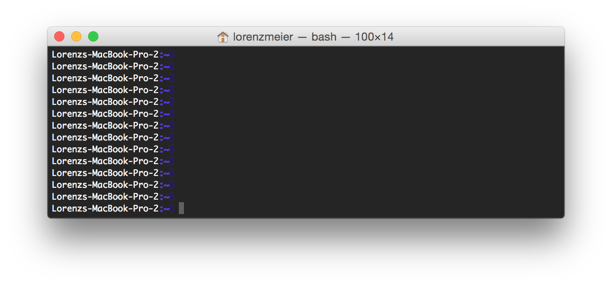

编译px４软件
PX4可以在控制台或者图形界面/IDE开发
在控制台编译
在去到图形界面或者IDE前，验证系统设置的正确性非常重要，因此打开控制台。在 OS X, 敲击 ⌘-space ，并搜索'terminal'。在Ubuntu，单击启动栏，搜索“terminal”（或者trl+alt+T）。在windows平台，在开始菜菜单找到px4文件夹，单击'PX4 Console'

终端在Home目录启动，我们默认去到'~/src/Firmware' 然后，克隆顶层资源库。有经验的开发者可以克隆自己的复制的资源库
mkdir -p ~/src
cd ~/src
git clone https://github.com/PX4/Firmware.git
cd Firmware
git submodule update --init --recursive
cd ..
现在可以通过编译源代码来构建二进制文件。在直接使用硬件前，推荐先进行仿真。喜欢在图形界面开发环境工作的用户也应该继续完成下面部分。
基于NuttX / Pixhawk的硬件板
cd Firmware
make px4fmu-v2_default
注意到“make”是一个字符命令编译工具，“px4fmu-v2”是硬件/ardupilot版本，“default”是默认配置，所有的PX4编译目标遵循这个规则。
成功编译的最后输出是这样的：
[100%] Linking CXX executable firmware_nuttx
[100%] Built target firmware_nuttx
Scanning dependencies of target build/firmware_px4fmu-v2
[100%] Generating nuttx-px4fmu-v2-default.px4
[100%] Built target build/firmware_px4fmu-v2
通过在命令后面添加‘upload’，编译的二进制程序就会通过USB上传到飞控硬件:
make px4fmu-v2_default upload
上传成功时输出情况如下：
Erase : [====================] 100.0%
Program: [====================] 100.0%
Verify : [====================] 100.0%
Rebooting.
[100%] Built target upload
Raspberry Pi 2 开发板
以下命令编译生成Raspbian（posix_pi2_release）版本的固件。
cd Firmware
make posix_rpi2_release # for cross-compiler build
"mainapp"可执行文件位于目录build/posix_rpi2_release/src/firmware/posix下。 将其复制到RPi（用你的RPi的IP或主机名替换YOUR_PI，关于如何访问你的RPi，查看介绍)
然后使用以下命令设置你的RPi的IP（或主机名）：
export AUTOPILOT_HOST=192.168.X.X
并上传：
cd Firmware
make posix_rpi_cross upload # for cross-compiler build
然后，通过ssh连接并运行它（以root权限）：
sudo ./px4 px4.config
本地构建
如果你要直接在Pi上编译，则需要在本地编译固件（posix_rpi_native）。
cd Firmware
make posix_rpi_native # for native build
“px4”可执行文件位于目录build/posix_rpi_native/src/firmware/posix中。直接运行：
sudo ./build/posix_rpi_native/src/firmware/posix/px4 ./posix-configs/rpi/px4.config
px4成功执行的情况如下：
______ __ __ ___
| ___ \ \ \ / / / |
| |_/ / \ V / / /| |
| __/ / \ / /_| |
| | / /^\ \ \___ |
\_| \/ \/ |_/
px4 starting.
pxh>
自启动
要自动启动px4，在exit 0之前，请将以下内容添加到文件/etc/rc.local中（如果使用本机构建，请相应调整）：
cd /home/pi && ./px4 -d px4.config > px4.log
Parrot Bebop
支持的Bebop是非常早期的版本，使用前请特别注意。
编译
cd Firmware
make posix_bebop_default
打开你的Bebop，通过Bebop的wifi连接你的主机。 然后，按下电源按钮四次以启用ADB并启动telnet守护程序。
make posix_bebop_default upload
以上操作会将PX4 mainapp上传到/usr/bin并创建文件/home/root/parameters（如果尚未存在）。 此外，我们需要Bebop的mixer文件和px4.config。 当前这两个文件必须使用以下命令手动复制。
adb connect 192.168.42.1:9050
adb push ROMFS/px4fmu_common/mixers/bebop.main.mix /home/root
adb push posix-configs/bebop/px4.config /home/root
adb disconnect
运行
连接Bebop的wifi，然后按电源按钮四次。 接下来，通过telnet或adb shell与Bebop连接，并运行以下命令。
telnet 192.168.42.1
通过以下命令关闭Bebop的所有驱动。
kk
启动PX4 mainapp：
px4 /home/root/px4.config
为了飞行Bebop，将操纵杆设备与主机连接并启动QGroundControl。 Bebop和操纵杆都应该被识别。按照说明校准传感器并设置操纵杆设备。
自启动
要使启动时在Bebop上自动启动PX4，请修改init脚本/etc/init.d/rcS_mode_default。 添加下行：
DragonStarter.sh -out2null &
替换为：
px4 -d /home/root/px4.config > /home/root/px4.log
通过按电源按钮4次启用adb服务器，并按照上述方式连接到adb服务器：
adb connect 192.168.42.1:9050
将系统分区重新挂载为可写：
adb shell mount -o remount,rw /
为了避免手动配置文件，可以使用下面链接： https://gist.github.com/mhkabir/b0433f0651f006e3c7ac4e1cbd83f1e8
保存原来的，并将其推送到Bebop
adb shell cp /etc/init.d/rcS_mode_default /etc/init.d/rcS_mode_default_backup
adb push rcS_mode_default /etc/init.d/
同步并重启
adb shell sync
adb shell reboot
基于QuRT / Snapdragon的开发板
编译
以下命令编译Linux和DSP端的固件。 两个可执行机构通过muORB进行通信。
cd Firmware
make eagle_default
要将SW加载到设备上，通过USB数据线进行连接，并确保设备已启动。 在新的终端窗口中运行：
adb shell
返回上一个终端并上传：
make eagle_default upload
请注意，这也将复制（并覆盖）mainapp.config和px4.config这两个配置文件到设备。 如果你要直接编辑启动脚本，文件路径分别为/usr/share/data/adsp/px4.config和/home/linaro/mainapp.config。
当前需要手动复制mixer
adb push ROMFS/px4fmu_common/mixers/quad_x.main.mix /usr/share/data/adsp
运行
运行DSP调试监视器：
${HEXAGON_SDK_ROOT}/tools/debug/mini-dm/Linux_Debug/mini-dm
注意：如果是在Mac上，你也可以使用nano-dm。
回到ADB shell并运行px4：
cd /home/linaro
./px4 mainapp.config
请注意，只要断开USB数据线（或者ssh会话断开连接），px4就会停止。 如果要飞行，你应该在启动后使px4自动启动。
自启动
要在Snapdragon启动时一直运行px4，可以将启动添加到rc.local中： 或者直接编辑文件/etc/rc.local：
adb shell
vim /etc/rc.local
或将文件复制到你的电脑，在本地进行编辑，然后将其复制回来：
adb pull /etc/rc.local
gedit rc.local
adb push rc.local /etc/rc.local
对于自动启动，在 exit 0之前添加以下行：
(cd /home/linaro && ./px4 mainapp.config > mainapp.log)
exit 0
确保rc.local是可执行的：
adb shell
chmod +x /etc/rc.local
然后重新启动Snapdragon：
adb reboot
图形IDE界面下编译
PX4 支持Qt Creator, Eclipse 和Sublime Text三种集成式开发环境。 Qt Creator是最友好的开发环境，所以被是唯一官方支持的IDE。除非资深的Eclipse 或Sublime开发者，否则一般不推荐使用Eclipse或Sublime进行二次开发。硬件底层开发可以在 Eclipse project 和 a Sublime project 找到源码。
Qt Creator 功能
Qt creator 提供单击选择变量、代码自动补全、代码编译和固件上传等功能。

Linux 平台的 Qt Creator
在启动Qt creator之前, 需要先创建工程文件 :
cd ~/src/Firmware
mkdir ../Firmware-build
cd ../Firmware-build
cmake ../Firmware -G "CodeBlocks - Unix Makefiles" -DCONFIG=nuttx_px4fmu-v2_default
接着启动Qt creator（如果系统没安装Qt Creator 百度一下linux下安装Qt Creator，然后再启动Qt Creator）并加载 Firmware 根目录下 CMakeLists.txt 文件，步骤：点击工具栏 File -> Open File or Project -> Select the CMakeLists.txt file 。 如果加载提示ninja没有安装，请按照“高级Linux”章节进行ninja编译工具的安装，安装完成后，log out（登出）并log in（登入）。
加载了文件后，点击左侧projects按钮，在run onfiguration栏选择'custom executable',在executable 栏里输入'make'， argument栏输入 'upload'，将‘play’按钮配置成运行工程。
Windows平台的 Qt Creator
Mac OS 平台的 Qt Creator
启动 Qt Creator 之前，需要先创建 project file ：
cd ~/src/Firmware
mkdir build/creator
cd build/creator
cmake .. -G "CodeBlocks - Unix Makefiles"
完成上述步骤以后，启动 Qt Creator, 完成下面视频中的步骤，就可以进行工程文件的编译了。